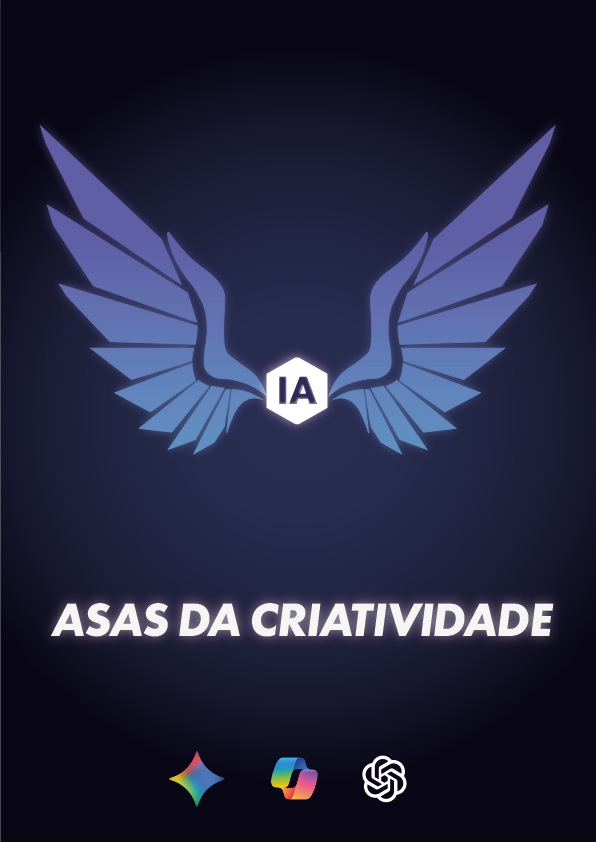
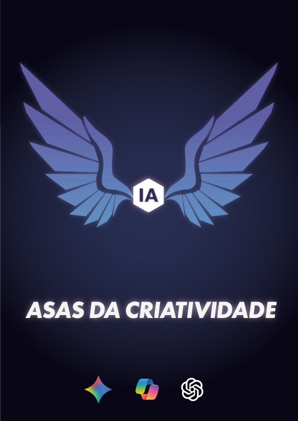

Futuro do trabalho - Posters
Projeto de alguns posters para alertar sobre o futuro do trabalho.
Sobre o projeto
Este projeto foi desenvolvido para a disciplina de Ilustração e Design, com o objetivo de alertar e provocar reflexões sobre o futuro do trabalho em um contexto de constante avanço tecnológico. A proposta parte da observação de como ferramentas tradicionais estão sendo gradualmente transformadas — ou substituídas — por soluções digitais e inteligentes.
Visual
 


Processo de criação
O processo de criação deste projeto partiu da reflexão sobre as transformações tecnológicas e seus
impactos no futuro do trabalho. A proposta foi representar visualmente essa mudança de forma simples e
simbólica, utilizando o contraste entre ferramentas analógicas e digitais.
A composição explora a transição entre esses dois cenários por meio de efeitos visuais que representam
ruptura, adaptação e evolução. Cada elemento foi pensado para reforçar a ideia de transformação contínua
e a necessidade de atualização profissional.
O projeto mantém uma unidade visual baseada em um design contemporâneo, com tipografia forte e uma
paleta de cores que reforça o conceito de futuro. O resultado final busca provocar reflexão sobre como
as profissões estão mudando e qual será o papel do indivíduo nesse novo contexto.
Conclusão
A realização deste projeto permitiu colocar em prática o uso de ferramentas como Adobe Photoshop e Adobe Illustrator, explorando recursos de composição, tipografia e tratamento visual. A partir do desenvolvimento dos pôsteres, foi possível aprimorar a construção de conceitos visuais, a coerência estética e a comunicação de ideias por meio do design. O resultado demonstra a importância do design como ferramenta de reflexão e evidencia a evolução técnica e criativa ao longo do processo.